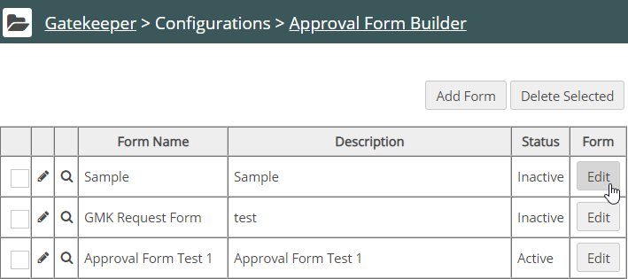
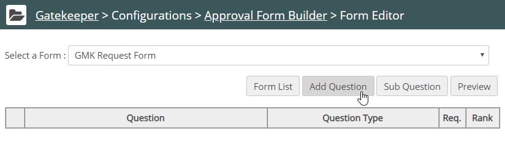
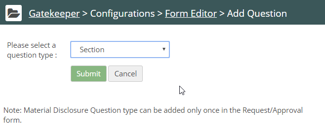
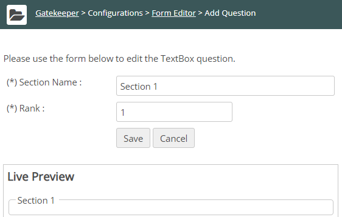
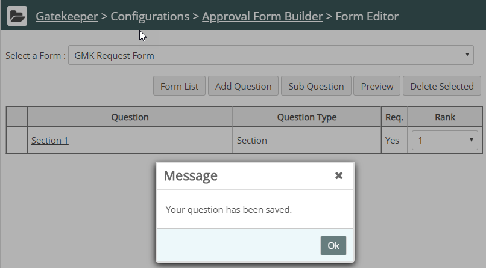
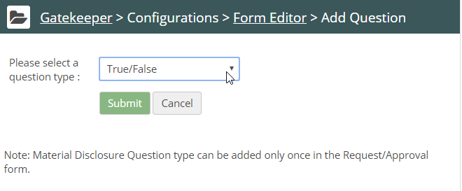
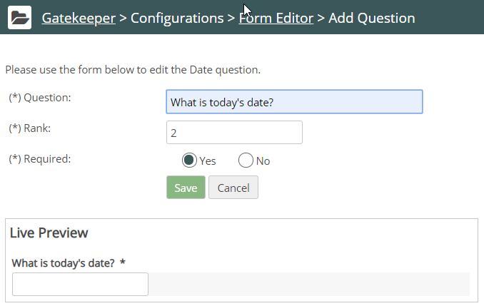

After creating a Request Form or Approval Form, you can add questions to the form. You may also add questions to a form when revising a form.
To add questions to a Form:
From the form list, click Edit in the form table.

The Request Form Builder displays.

Click Add Question. The Form Editor displays a drop-list of question types. For a new form, Section is required as the first element, so that will be the only choice initially.

Choose Section and click Submit. The editor displays a field to edit the section name:

Fill in the Section Name. The Rank value determines the order in which the element appears in the form. As this section is the first element, Rank should be 1.
Click Save. The question list shows the section name:

Click Add Question again. The drop-list now displays a full menu of question types to select from.

See Supported Question Types for details of each question type.
In this example, we choose the question type date. The Form Editor displays the details of the date question:

Add questions as needed. Specify whether an answer is required for the question by choosing Yes or No.
You can also Add Subquestions to be triggered by specific responses to a question.
By default, Gatekeeper ranks each new question sequentially as you add them. You can adjust the Rank as necessary.